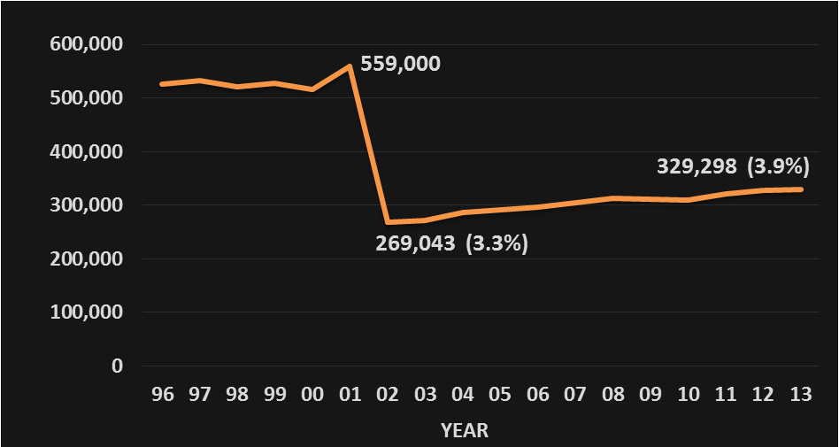
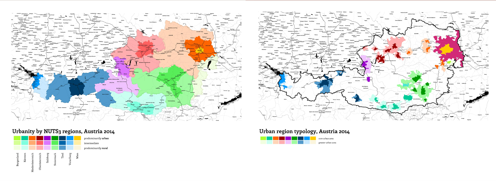

Internal migration in Austria along the rural-urban continuum and across the life course, 1996–2013
Nikola Sander and Ramon Bauer
ICPG, Brisbane, July 2015
Trends in internal migration
Overall decline in the volume of movement (IMAGE)
Re-urbanisation tendencies in Western Europe (e.g. Germany)
Impediments to the study of re-urbanisation
Definition of "urban"
Functional areas
Size and complexity of origin-destination flow matrices
Internal migration in Austria
Earlier work mostly limited to mapping net-migration.
Little analysis of flows beyond political districts (N 99)
Higher net gains among 18-24 year olds in urban cores
Our aim
To develop a more comprehensive picture of the patterns and trends in internal migration in Austria by applying different definitions of "urban".
OECD definition (based on NUTS3 typology)
predominantly urban - intermediate - predominantly rural
Statistik Austria definition of city regions
urban cores - outer zones - non-urban/rural
Statistik Austria typology
Data
Spatial resolution: municipalities (N 2,353)
Temporal resolution: annual migration events 1996-2013
Population at risk by age & 7 age groups (>18, 18-24, 25-29, 30-34, 35-49, 50-64, 65+)
Austria changed to a register-based system in 2002

Net-migration for all ages suggesting re-urbanisation
Growing attractiveness of urban cores for 18-24 year olds
Reducing complexity through custom geographies
Exploring the impact of geography on the patterns of internal migration along the urban-rural gradient

Flows between NUTS3 regions, 2002.
Flows between NUTS3 regions, 2013.
Conclusions
Overall increase in volume of movements
Growing attractiveness of core cities for 18-24 age group
Intra-city movements, esp to largest cities (Vienna and Graz)
Families continue to prefer the outer urban zones
Next steps
- Alternative geographies (eg. other national classifications)
- Cross-national comparisons (e.g. to Germany)
- Interactive visualisations for public & policy